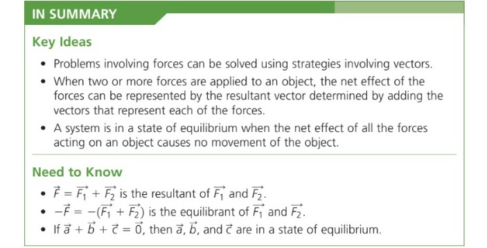
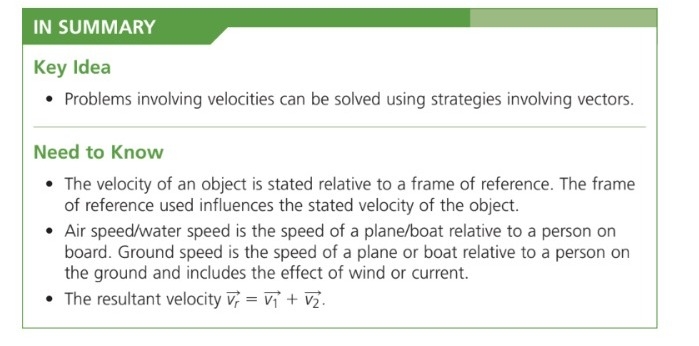

That's a Wrap

Please review the following Learning Goals of this section and check the Success Criteria you already achieved.
Tabs
Please review the following Learning Goals of this section and check the Success Criteria you already achieved.
Learning Goals
Students will distinguish between velocity and displacement.
Students can write vectors as a linear combination of unit vectors.
Students know how to represent forces using vectors and how to use vectors to solve problems involving velocity.
Success Criteria
I Can….
Recall and explain forces and vectors.
Explain resultant force, equilibrant force and velocity vectors.
Resolve vectors into components.
Represent velocity vectors as diagrams.


Learning Goals
Students know how to calculate the dot product of two geometric vectors (when given the magnitude and direction of the vector).
Success Criteria
I Can….
Recall the multiplication of scalar and vector quantity.
Understand and apply the dot product properties when solving questions.
Multiply vectors using the Dot Product rule.

Learning Goals
Students know how to calculate the dot product of two algebraic vectors (when given the vector in component form).
Success Criteria
I Can….
Recall the dot product properties when solving questions.
Multiply vectors in R2 and R3 using the Dot Product rule.

Learning Goals
Students are familiar with projections.
Students can calculate the cross product of two vectors.
Success Criteria
I Can….
Explain projections in R2 and R3.
Recall the dot product properties when solving questions.
Solve scalar and vector projections.
Find the direction cosines of the vector.
Solve the cross-product of two vectors.

Learning Goals
Students can apply what they learned about the dot and product to solve real-world problems involving vectors.
Success Criteria
I Can….
Recall and solve dot and cross-product computations.
Solve the force applied in an object, the area of a parallelogram and triangle, and the torque applied on an object using vectors.